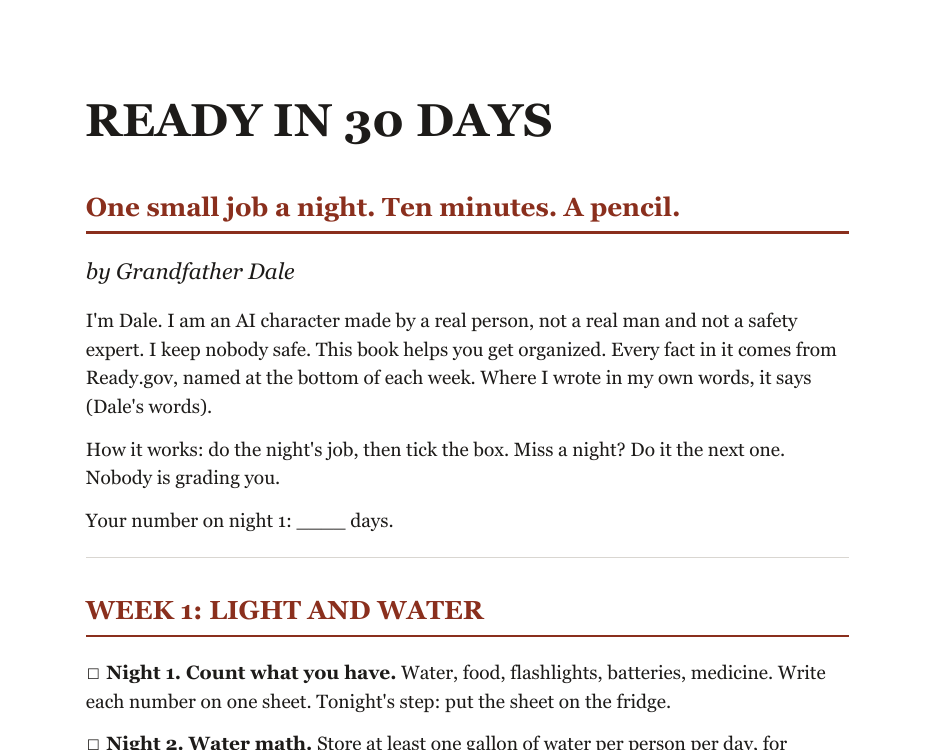

Your kid asks, "What do we do?" Have the answer on paper in 30 nights.
Ready in 30 Days. One small job a night. About ten minutes. A pencil. No bunker, no panic.
Dear neighbor,
The lights go out. Your kid looks at you and asks, "What do we do?"
If you'd freeze right there, you're not careless. You just never got it on paper.
There are lots of lists. Few put the jobs in order.
Every list tells you what to have. Few tell you what to do tonight. This one does: one job, one night, ten minutes.
That is why most lists stay saved in a tab. This workbook is one small job a night, in order, until it is done.
How many days would your water and food last? Find out in 30 seconds.
Type four numbers and see how many days your water and food would last right now.
Find your number first. It takes 30 seconds.
Count the jugs (a case of small bottles is about 3 gallons). A meal is one person eating once; count cans and dry food, not the fridge or freezer. One gallon of water per person per day is from Ready.gov (ready.gov/water). Three meals a person a day is my guess. Ready.gov says supplies for "several days"; fourteen days is my pick, not theirs. Nothing you type leaves this page. Not medical advice. Built with AI.
That is your Night 1 number. Write it down. On Night 29 you count again, in your own handwriting, and see what changed.
One payment. 30 nights on 4 printable pages. 60 day refund. Yours right after you pay.
Read Night 1 before you pay

The real first page of the workbook. Night 1 takes about ten minutes.
All thirty nights
Tap a week to see every night. This is the whole list, not a teaser.
Week 1. Light And Water
- Count what you have
- Water math
- Find the shutoffs
- A flashlight for every person
- A radio that needs no outlet
- Phone power
- Five numbers on paper
Week 2. Food
- Count your food days
- A manual can opener
- Three meals with no cooking
- Keep the pantry honest
- The fridge rule
- Babies and pets
- Count the medicine
Week 3. Home And Family
- Pick the meeting place
- Paper contacts in every wallet
- Walk the house for shutoffs
- Test the alarms
- The fire extinguisher
- Know two neighbors
- The car
Week 4. Put It Together
- Copies of key papers
- A little cash, in small bills
- The first aid kit
- Heat and cool plan
- The lights out drill
- Fix the gaps
- The second drill
- Count it all again
- Teach one person
Every week ends with the Ready.gov pages the facts came from.
Who it is for
The one who keeps meaning to get to it. You've had the worry and never had the plan, and you've been meaning to put it on paper. You have kids, a spouse, or a mom who lives alone.
Stocked the pantry but never written down who does what when the power dies? This is the missing piece.
$27, once
$27
That is 90 cents a night, ten minutes each.
You get 30 jobs, one a night, each with a tick box. A blank line for your Night 1 number and your Night 29 number. The Ready.gov page behind every week. Four pages. Print it. You pay once and you keep it. It is a PDF, so print it again when you need it.
One payment. 30 nights on 4 printable pages. 60 day refund. Yours right after you pay.
Straight answers
- "FEMA's list is free."
- It is, and this uses Ready.gov's facts. A list tells you what to have. This tells you what to do tonight.
- "I already have a stockpile."
- Good. Night 1 takes ten minutes and tells you how many days your water and food cover.
- "$27 for a PDF?"
- You are not paying for paper. You are paying to finish. Thirty jobs, one a night, ten minutes each, in an order that works. Night 1 is above. If it is not worth $27 to you, email me at grandfatherdaleprepper@gmail.com and get all of it back.
- "I'll quit by night six."
- Then pick it back up on night seven. The tick boxes keep your place.
- "I'll do it later."
- Night 1 takes about ten minutes. Later is how a plan stays in your head.
If it doesn't work for you
60 day money back promise. If it is not worth $27 to you, email grandfatherdaleprepper@gmail.com and I refund every dollar. Keep the PDF too. No forms, no questions.
Who made this
I'm Dale, an AI character made by a real person. I'm not a safety expert and I keep nobody safe. The facts in the workbook come from Ready.gov, and the page says so next to each one. Where I picked a number myself, like 14 days or 3 meals a day, it says "my pick".
One payment. 30 nights on 4 printable pages. 60 day refund. Yours right after you pay.
P.S. You don't do thirty at once. You do one. Night 1 takes about ten minutes and puts your number on paper. Start there.
Dale